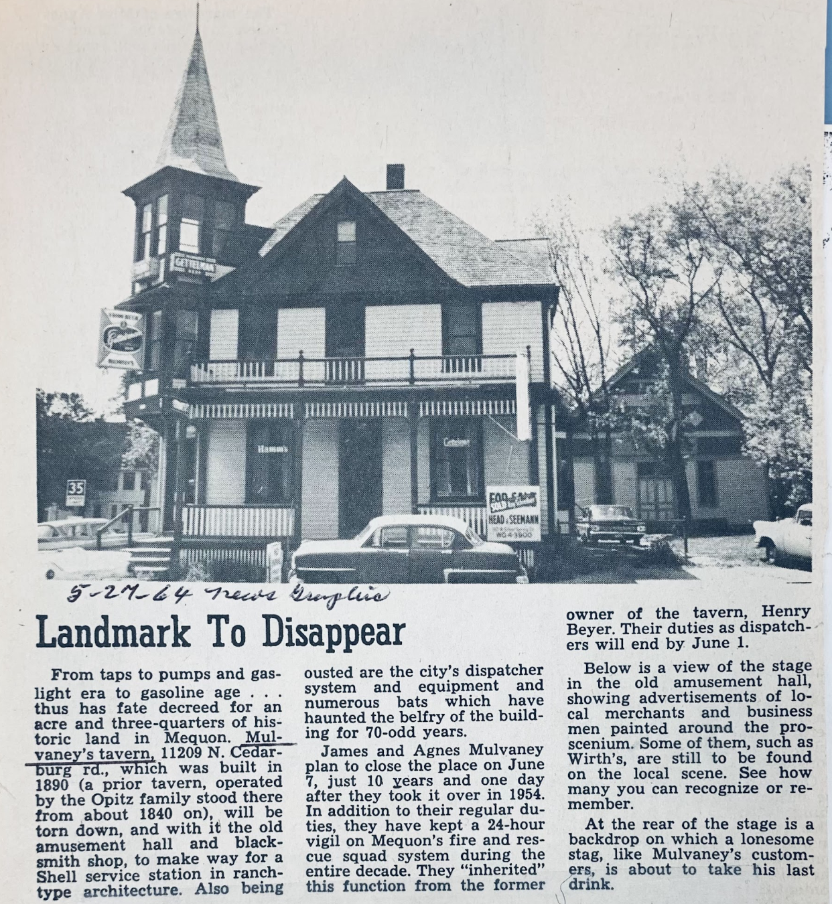
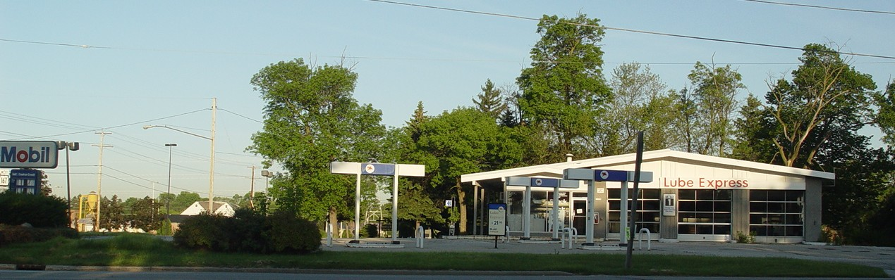
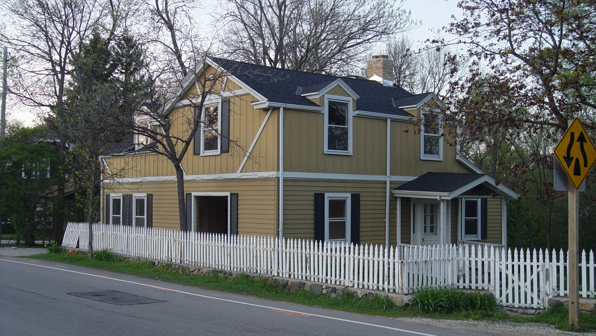

Changes
Herzinger’s Tavern, on the northwest corner of Cedarburg Road and Mequon Road, was bought by James Mulvaney. In 1964 it was razed.
A Mobil gas station was put in its place.
The Herzinger home, ice house, and butcher shop across Mequon Road became a strip mall.
Seyfert’s Pharmacy on the northeast corner was razed. Its ice cream parlor’s marble counter was repurposed as a bartop in Milwaukee. Several homes were built on the parcel. The remaining land became a park.
Rennard’s Tavern on the southeast corner became another strip mall.